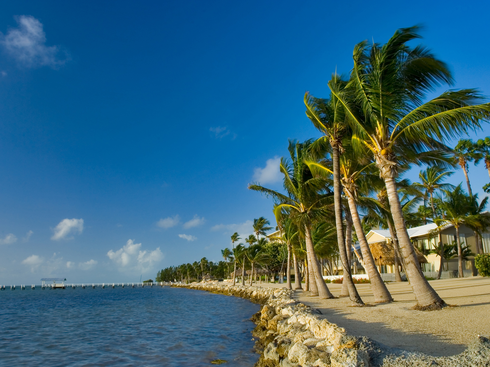
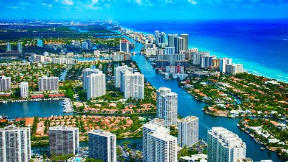

In our trip to Orlando Universal we arrived to Florida´s airport. I was impressed, it was like a hotel but no, each floor content a shop but before we get to there we get into a train that lead us from the planes to that part. I was impressed that I dont see to much people at the time. At the time we arrived was in the afternoon so we went to see some shops that were in there.
One of the stores that I remembered more was the Disney´s Store because it had all the shows that I like in DVD. In this especific store they were a lot of kids but mostly because it was a show passing on the TV. I only look at the publicity. I remember that when I entered that store I felt my body more fresh because there was this powerful air condition in it, and also when we arrive I felt that Florida was more hot than Mexico.
Florida Beaches In the second day when we went to the Universal Park we need to get there by walking. At first I though I will be pretty tire of walking but the path wasn´t very long. In the path to the Universal park we saw a beutiful lake and also we pass like in a Woods. But we can still see the cars pass out. I was very exited because the new attraction from Harry Potter was opened so we focus on that attraction.
When we get to the part of Harry Potter I was very exited because I like a lot the Harry Potter movies and being there was a great expirence seeing the castle and all from Gringgrots. Also when we arrive there was a lot of people, even more than I can imagine. The ride inside the castle was expectacular, flying around with Harry Potter and have seeing all interior from the castle . Also in that part we eat in a restaurant call the Three Brooms and the meat in there was really delicious. In the next section from the park we were in the comics theme, were I meet my favorate super hero: Iron Man. In this section there were not to many attractions. The main attraction were the comics that they sold. They have a large section of comics from old comics to the news ones. Also they were people who dress up from his favorite super hero. In the night we dinner in the Hard Rock restaurant, outside from the parks. All the food was delicious and the temperature in there was good, there were no Windows and there were to many people. Finally I was preparing to say good -bye to that place that bring me joy.
Another One of Florida Beaches